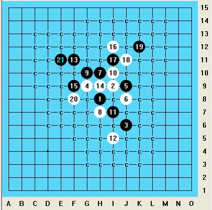
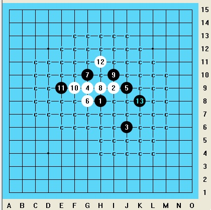
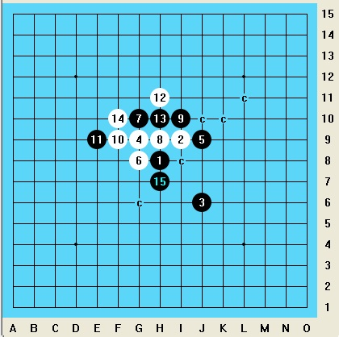
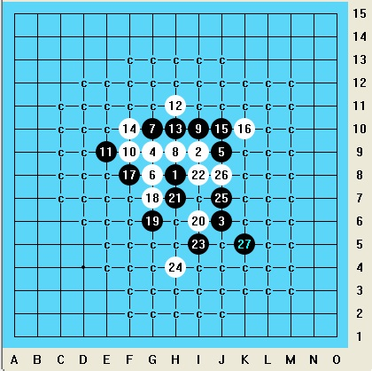

【高校赛】第十三届北京市高校五子棋邀请赛棋评——wind2323
#1 【高校赛】第十三届北京市高校五子棋邀请赛棋评——wind2323 作者：雄鹰王 发表时间：2013-12-4 14:06:08
注：本文转载自百度五子棋贴吧：http://tieba.baidu.com/p/2736820514；
首先说一下比赛初期的筹备工作。吸取了上一次参加高校赛的经验与教训，我们这次提前一个月就开始了队员的招募与训练工作。总之，其中遇到的种种困难自不必多说，通过转人人状态、发树洞消息、主动拉人等途径，我们最后形成了一个大约由10人组成的五子棋队伍。然后，就是每周一次的棋队聚会，大家在一起练习对弈、学习定式、探讨习题，等等。总之，虽然雄鹰王的缺席让我们感到有些遗憾，不过在我们自认为作好了一切需要准备的工作之后，还是算比较顺利地出发了……
第一轮
清华大学 郝天一（黑） vs 北京大学 王康达（白） 黑胜 共19手
花月局 5打 交换 打点：F6 G6 H6 I6 I5
由于这是第一轮，不知道对手们的实力，所以心情还是相对比较忐忑的。决定还是先采取试探的策略，采取比较保守的走法。观看了首轮的对阵表，对手是来自隔壁高校的王康达，由对方开局。经过了几句寒暄之后，我们开始了比赛。对方开出了花月五打，虽然根据我的下棋风格，我极不情愿走黑棋，但根据之前对山口打点的了解，我认为还是交换对自己比较有利。行进到黑5，正常给出了5个打点之后，对方留下了一个对黑方来说貌似必胜的一个打点，然后白6挡了我的活二。当时经过分析，我认为这个白6意义不大（到底如何？大神求解……），既没有形成什么可利用的连接，又没对黑棋形成什么有意义的防守。于是当时我急切地想要杀掉，最后选择了能形成2个活二的黑7.后来我发现我居然没有发现7-7左的这个最佳点，这貌似有些像花月一打的某个变化。然后这个现在的这个黑7貌似有一个对我来说不太好办的唯一防I6，走了这个点之后黑棋占不到什么大便宜。不过这个7也有一个好处，就是如果白棋防得不对的话，将会杀得十分轻松。于是，白8弱防，黑9以下简单杀……
第二轮
清华大学 郝天一（黑） vs 北京交通大学 解志亮（白） 黑胜 共37手
流星局 1打 不交换 打点：J9
第二局，对手是来自北京交通大学一队的解志亮。北京交通大学是传统强队，我对这局心里比较没底，不过后来同队的同学又告诉我说，北交的最强队是二队，这使我像受惊小鸟一样的心情稍稍平复了下来。何况我们校的彭阳在上一局击败了据说北交最有希望的徐建鑫，所以我猜测北交的实力也并非那么遥不可及。
然后就是我开局了。在这里我要声明一下，由于比赛前一天晚上我们训练时一直在拆流星，再加上前一段时间我在慢棋网上也一直在下流星一打，所以我按照计划，开了流星一打。我没有想到同队的华江同学也由于类似的原因开了流星，更没有料到为什么我们会被吐槽为“清华除了流星，不会别的”，不过这纯属巧合……
对方没有提出交换，然后接下来直到8手，都是按照流星一打的常见变化走的。然后黑9貌似有多个点可供选择，经过短暂思考，我选了我最近常走的一个黑9.行棋至12，到达了一个我非常喜欢的局面，根据我的经验，虽然据说大角对中村走过这个变化，但是这里白棋貌似非常不好走。而且我坚信对方没有见过接下来的这个13……这是我之前在慢棋网上和雄鹰王一起拆过的一盘棋（见下一层楼的图），接下来白棋只有有限的几个好点可以走，而且就算防好了，白棋依然显劣势。
白16给了一个很弱的防，无法有效限制住黑棋的进攻，比较好的防点我还没有确定，应该在15附近那一圈，或者就像上面的那盘慢棋一样，先活两个三限制黑棋的路线，再换另一个20防守也不错。不过这时候，我已经确信黑可以VCT了。如果黑棋想在进攻的同时不会被白棋获得先手，同时也不耗尽自己的材料，接下来进攻路线也比较单一。行进至29，我以为自己已经算清了所有的路线，可以简单杀了。不过，对方经过思考，给出了一个我没有想过的防守，通过冲四造了一个四四禁手点，把我的活三变成了眠三。继续计算了很长时间也没有什么好手，我一度以为自己杀不掉了。怀着试试看的心态，我冲四之后做了一个双杀，不过我认为这点是可以在B8防掉的。然后，在我还没想到怎么杀的时候，对手就投了，我于是松了一口气……
后来复盘时发现，即使白方放在了B8，我接下来只要强行冲四活三，之后便可以在G11点做长连解掉C7的禁手取胜。另外也有一路4手的VCF可以恰好取胜。如果接着走下去的话，我应该也是可以杀掉的，只不过要试探性地走一走算到。
经过这盘棋，我感觉，对手的棋力貌似不比我弱，只是自己的运气比较好，还有对方投的太早了……
下图是我和雄鹰王拆过的一盘慢棋，与这盘棋前面的走法有相似之处……

第三轮
北京邮电大学 薛书豪（黑） vs 清华大学 郝天一（白） 白胜 共18手
松月局 3打 不交换 打点：I8 I9 J9
中午休息过后，我们开始了第三轮的比赛。对手是来自于北京邮电大学的薛书豪，由对方开局。本来认为由于瑞士积分制的特点，在连赢两场过后，在接下来的一盘可能会遇到比较强的对手，但是后来发现，这局实际赢的比较轻松。
比赛开始，对方开出了松月三打。根据我以前了解的知识，虽然松三在理论上可能对黑棋略优，但仍然属于一个可战性较强的开局，于是应了最常见的一个白4。对方貌似对松月局的打点缺乏足够的了解，除了给出了松一、松三之外，还给出了一个较弱的打点J9。我留下了这个貌似是必败的打点，经过短暂的思考之后，白6应在了黑1左边，拟在棋盘的左下角强行进攻。其实这手棋走出之后，我就有些后悔，因为我发现，如果黑7在上边挡住活二，继续发展下去，白棋貌似是很吃亏的。后来查棋谱，发现最佳的白6应该在白10的位置，不过这对于当时全无研究的我来说，确实不容易想到。不过，让我高兴的是，黑7并没有走到我想象中的位置，而是全无道理地活了一个三，白8挡之后黑方已无力防守，以下速胜。
［ 釣鱼岛岛主 于 2013-12-4 14:10:00 时奖励此帖[金币加 100 威望加1］
［ 釣鱼岛岛主同学于 2013-12-4 14:11:11 时花20金币送鲜花一朵］
［ 釣鱼岛岛主同学于 2013-12-4 14:11:11 时花20金币送鲜花一朵］
［ 釣鱼岛岛主同学于 2013-12-4 14:11:11 时花20金币送鲜花一朵］
［ 釣鱼岛岛主同学于 2013-12-4 14:11:11 时花20金币送鲜花一朵］
［ 釣鱼岛岛主同学于 2013-12-4 14:11:11 时花20金币送鲜花一朵］
#2 Re:雄鹰王【==【高校赛】第十三届北京市高校五子棋邀请赛棋评——wind2323==】 作者：雄鹰王 发表时间：2013-12-4 14:10:29
第四轮
北京大学 李贺（黑） vs 清华大学 郝天一（白） 和棋 共94手
流星局 1打 不交换 打点：J9
第四轮，没有像预期的那样遇上黄梦迪，对手是来自北京大学的李贺。这局棋，可以说走得异常憋屈，整局棋都在被动地防守，而这也是来源于我的开局应对失利。
既然大家都在说清华只会开流星局，那我当然就是开的流星一打吧……对方提出交换。前6手是流星局的正常变化，然后对方走了一个我从没见过的黑7，对于如何应对，我便陷入了思考之中，最后选择了一个看起来形状还不错的白8。然后我就发现我貌似是走错了，我只注意了眼前的棋形，而忽略了后续的变化。黑9压在了I10点之后，看起来已经取得了很大的优势，相比起来，白棋很难再找到好走的点，之后便陷入被动之中。迫于无奈只得防守，由于担心G10点被抢占，我先冲了一个四然后防守，经过之后几手的纠缠后，尽可能多地挡掉黑方的活二，然后交给黑方进攻。
在接下来的进攻过程中，可以看出，对方的进攻貌似更趋于感觉化，而缺乏细致的计算，有一些应积极进攻的局面下走了偏向防守的应对，而使黑方的优势削弱化，以至于丢失了一些本来可以取胜的好机会。但无论如何，白方一直在被迫防守黑方的进攻，行进至40余手，本来危险最大的右下角区域，进攻材料已经被完全耗尽。此后，黑方仍然试图在棋盘的左下角，左上角展开进攻，然而进攻已经越来越乏力，白方也只需随意的防守就可以防住。至90多手时，对方提和，于是这盘走得异常憋屈的棋宣告结束。
回去用软件扫了一下，感觉除了一身冷汗，在黑方存在这么多的必杀的情况下，我仍能保持存活，除了对方没有很好地把握住进攻机会之外，不得不说也有一定的运气因素在里面。



第五轮
华北电力大学 黄梦迪（黑） vs 清华大学 郝天一（白） 黑胜 共35手
疏星局 2打 不交换 打点：I9 G8
第二天，我和黄梦迪早早地就坐在了比赛的座位上，并讨论了前一天的一些对局。比赛开始，黄梦迪开出了疏星二打。尽管之前有人建议过我交换，但考虑到我比较愿意执白棋，没有提出交换。进行到11手，都是疏星的定式，然后我就蛋疼了，因为我明明知道定式里有这个，可是就是记不起了接下来是怎么走的了。这时候，我突然想起来，之前貌似见过一局胡夕对刘洁的对局，那里的12是这么走的，于是我虽然不知道为什么应该在这里，也就照葫芦画瓢走了上去。然后，对方走13之后，我更不知所措了，感觉走到哪里都不好，犹豫了半天之后，决定在9上活三，而后来的分析表明，这个14已经是必败的了。接下来，胡乱冲了几个四之后，紧接着就是黑方的VCT，然后我就没有任何悬念地惨败了……事实证明，我之后的防守也并不好，至少也应该在25的位置先冲个四什么的，虽然接下来仍然是黑胜，不过至少杀起来要麻烦点。
结束之后，黄梦迪告诉我正确的白14应该在15的位置，然后他本来想骗我在H10的位置活三，这个是个老定式但是是必败的，然后又跟我说了好多后续变化，据说还有好多陷阱一走不好白棋就跪了，反正到了最后我就完全被说糊涂听不懂了，总之感觉好厉害的样子……
［此帖子已被 雄鹰王 在 2013-12-4 14:11:31 编辑过］
#3 Re:【高校赛】第十三届北京市高校五子棋邀请赛棋评——wind2323 作者：雄鹰王 发表时间：2013-12-4 14:14:31
第六轮
首都师范大学 闫立晟（黑） vs 清华大学 郝天一（白） 黑胜 共31手
松月局 3打 不交换 打点：I8 J7 I6
第六轮，对手是来自首都师范大学的闫立晟。对方开出了松月三打，我秉持着能走的话就尽可能不交换的理念，应了最强的白4，然后对方正常给出了三个打点，然后我留下了最弱的一个打点（这个到底是正常的松月三打，还是松三的对称点？求解……）进行至7手后，由于上一局和黄梦迪的对局，已经让我变成了惊弓之鸟，本来我对松月局就不熟悉，再生怕对方再像上一局那样，走出一个出乎我意料的变化什么的，不知出于什么心理，我没有选择最强防，而是选择了一个较弱的防点I9（目测这个点已必败？正在研究中）。黑9手是很正常的应对，我经过判断，认为黑棋接下来可能会在右侧发展，所以挡在了右边，事实证明这个防点貌似不如挡中间好。黑11自然，12挡上，这时候，看起来黑方已经取得了非常大的优势。接下来，对方陷入了20分钟的长考，试图杀掉白方。最终，黑方选择了一个略保守的13，而实际上，此时黑棋可以有一个不算复杂的VCT。接下来，我本来想走G6这个防点，后来考虑到前面白棋的棋形很像八卦阵，而14若在F5点的话，可以防住黑方左边的一路进攻，于是最终选择了现有的14。
黑15活三，白16挡，黑17做杀。我选择这个18是因为能挡住黑方进攻并形成两个活二牵制，不过后来和雄鹰王研究时，发现这个18已必败。19-22都很自然，23做杀时，我对接下来应该防在K8还是L6犹豫了很长时间。最后，考虑到如果防在L6，黑方仍然可以在H10反先，所以选择了另一个点，从而也宣告了这局的失败。我忽略了重要的两点：第一，先手本来就在黑方手里，而就算我在K8简单防，也一样会让黑棋拿到先手，其实没有区别，所以我放弃L6的理由不成立。第二，我没有仔细算清防L6的后续变化，我错误地认为黑方会有很大优势，而其实貌似根本杀不掉。总之，在这里我由于对局势的错误估计以及不清晰的计算，而选择了不正确的应对。25活三，26的防守也不是很好，如果防在另一端，虽然黑方也能杀，但是相对来说要麻烦得多。黑27以后简单杀。
最后还要说一点，这局棋结束的时候，黑方的时间仅剩余一分钟，也不得不佩服对方的心理素质，能够在这么短的时间内准确的算出杀。同时这局棋对我来说也十分可惜，如果我能在24找到合适的防点，那么多半对方会因超时而负。
第七轮
清华大学 郝天一（黑） vs 清华大学 龙华江（白） 黑胜 共5手
瑞星局 2打 不交换 打点：I7 J8
比赛的结果出来了，4.5分段并列了很多人，我由于对手分较高，最终排到了有禁组全部参赛选手的第9名。可以说，对于这次的比赛成绩，我认为还是可以比较客观地反映自己近期的状态的，毕竟与前边的徐建鑫、黄梦迪等人在棋力上还有较大的差距。这是我第一次参加山口规则的实战比赛，也使我初步熟悉了这个规则在实战中的一些特点和注意事项。这次比赛也反映了我的一些问题，例如，行棋过程中偏向直觉化，而缺乏清晰严密的计算，在局面复杂时难以静下心来思考问题，对常见定式的了解还有很多不足，以及比赛心理上还存在着一些不成熟的因素。在比赛过程中，以及在赛间休息时与其他选手的交流中，也使我提高了对五子棋棋理的认识，以及学会了一些实战技巧，我也感到实战的乐趣与网战是有很大不同的。与此同时，在这次比赛的准备过程中，也重新聚集了清华的一些五子棋爱好者，使已经荒废多年的清华五子棋事业有了复苏的迹象。总之，作为一名五子棋爱好者，我非常高兴在这次比赛中有了很多收获。
－－－－－－－－－－－－－－－－ＥＮＤ－－－－－－－－－－－－－－－
#4 Re:【高校赛】第十三届北京市高校五子棋邀请赛棋评——wind2323 作者：罗源棋手 发表时间：2013-12-4 14:48:36
卖萌的23加油。。。。那个可恶的大便仔比赛前一天和我撸到深夜，最后决定开这个骗，他本来想开疏星4打的一个变化怕骗不到你换这个了。。。#5 Re:罗源棋手【==Re:【高校赛】第十三届北京市高校五子棋邀请赛棋评——wind2323==】 作者：蚩尤血族 发表时间：2013-12-4 14:55:36
引用：
原文由 罗源棋手 发表于 2013-12-4 14:48:36 :
卖萌的23加油。。。。那个可恶的大便仔比赛前一天和我撸到深夜，最后决定开这个骗，他本来想开疏星4打的一个变化怕骗不到你换这个了。。。
呜……为啥受骗的总是我
［此帖子已被 蚩尤血族 在 2013-12-4 14:56:37 编辑过］
#6 Re:【高校赛】第十三届北京市高校五子棋邀请赛棋评——wind2323 作者：梧桐风 发表时间：2013-12-4 14:58:38
那啥，雄鹰王肯定去泡妞了以至没去比赛#7 Re:【高校赛】第十三届北京市高校五子棋邀请赛棋评——wind2323 作者：釣鱼岛岛主 发表时间：2013-12-4 15:18:41
雄鹰王你脸皮真厚 自己没比赛拿着别人的棋评来混威望#8 Re:釣鱼岛岛主【==Re:【高校赛】第十三届北京市高校五子棋邀请赛棋评——wind2323==】 作者：雄鹰王 发表时间：2013-12-4 16:39:09
不是的，是风23同意我这么做的，因为我上传的棋谱，如果我本人在论坛贴子中自己引用是可以增加收入的。。#9 Re:【高校赛】第十三届北京市高校五子棋邀请赛棋评——wind2323 作者：釣鱼岛岛主 发表时间：2013-12-4 16:42:59
 原来如此 缺钱花找哥。
原来如此 缺钱花找哥。
#10 Re:釣鱼岛岛主【==Re:【高校赛】第十三届北京市高校五子棋邀请赛棋评——wind2323==】 作者：雄鹰王 发表时间：2013-12-4 16:51:23
土豪，那往我账户上打点儿钱吧，哥貌似近一个多月来都没什么收入了
#11 Re:雄鹰王【==【高校赛】第十三届北京市高校五子棋邀请赛棋评——wind2323==】 作者：斜月 发表时间：2013-12-5 16:07:18
这次有禁赛场上看到清华的棋手们都在自发的用谱纸记谱，非常敬业！
#12 Re:斜月【高校赛】第十三届北京市高校五子棋邀请赛棋评——wind2323==】==】 作者：雄鹰王 发表时间：2013-12-5 16:55:38
其实上次也是这样的，纯自制的记谱纸，哈哈！#13 Re:斜月【==Re:雄鹰王【==【高校赛】第十三届北京市高校五子棋邀请赛棋评——wind2323==】==】 作者：蚩尤血族 发表时间：2013-12-6 10:15:28
引用：不记谱的话我根本复不出来盘诶，复不出来盘怎么到贴吧上发棋评骗精品……
原文由 斜月 发表于 2013-12-5 16:07:18 :这次有禁赛场上看到清华的棋手们都在自发的用谱纸记谱，非常敬业！
#14 Re:雄鹰王【==Re:斜月【高校赛】第十三届北京市高校五子棋邀请赛棋评——wind2323==】==】==】 作者：斜月 发表时间：2013-12-6 10:15:58
看出来了，谱纸不是全国通用的那种，哈哈！
旁观时候仔细看了，大家记谱的方式也不一致，有的是只写数字，有的是白棋画圈……（正常是应该黑棋画圈）
但是大家记谱都很严谨认真，每一步记一次，这甚至值得全国棋手学习，让某直辖市队精心研制的盘外招以后再没有市场。
#15 Re:【高校赛】第十三届北京市高校五子棋邀请赛棋评——wind2323 作者：釣鱼岛岛主 发表时间：2013-12-6 10:22:26
可以自己打印 我没事就打了一些 你们要是要 下次有机会就跟我说下 我给你们带去
#16 Re:蚩尤血族【==Re:斜月【==Re:雄鹰王【==【高校赛】第十三届北京市高校五子棋邀请赛棋评——wind2323==】==】==】 作者：斜月 发表时间：2013-12-6 10:32:31
引用：
原文由 蚩尤血族 发表于 2013-12-6 10:15:28 :引用：不记谱的话我根本复不出来盘诶，复不出来盘怎么到贴吧上发棋评骗精品……
原文由 斜月 发表于 2013-12-5 16:07:18 :这次有禁赛场上看到清华的棋手们都在自发的用谱纸记谱，非常敬业！
争取做到两天比赛不用记谱也能赛后全部复盘骗精品吧……（拍表拼时间的情况除外）
#17 Re:釣鱼岛岛主【==Re:【高校赛】第十三届北京市高校五子棋邀请赛棋评——wind2323==】 作者：斜月 发表时间：2013-12-6 10:39:05
引用：
原文由 釣鱼岛岛主 发表于 2013-12-6 10:22:26 :可以自己打印 我没事就打了一些 你们要是要 下次有机会就跟我说下 我给你们带去
谢谢，很久不下棋就不浪费纸张了！
不过话说回来，以前比赛时候组委会不发纸我也不记，都是下完再复盘，就没养成过一步一记谱的好习惯……